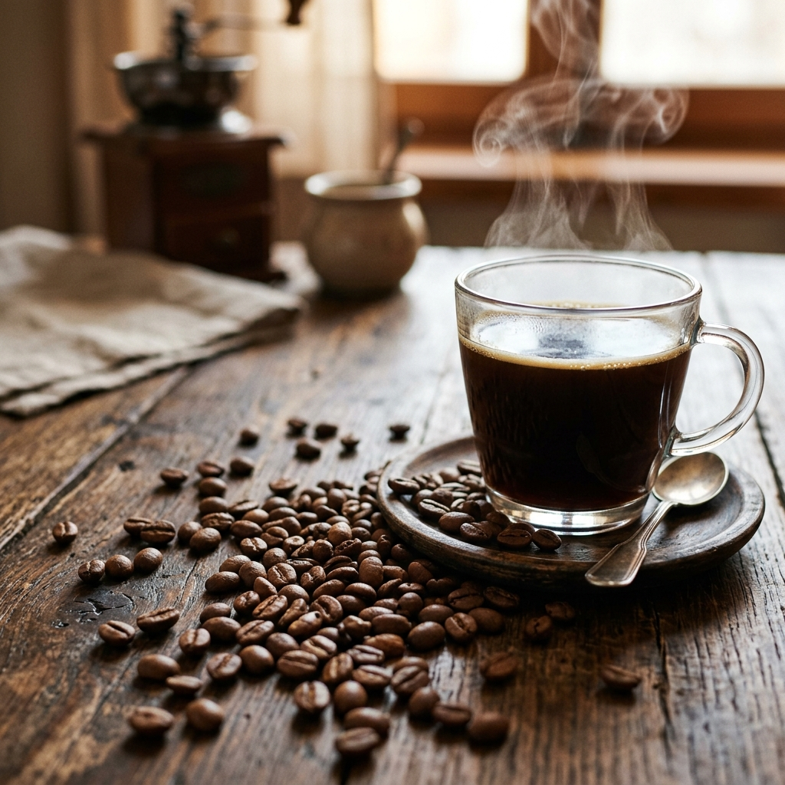

There is perhaps no brewing method more rewarding than a pour-over. When executed with precision and care, it yields a cup that highlights the vibrant, true characteristics of your coffee beans—stripping away the heavy oils and residual sediment often found in French Press or espresso preparation, leaving behind an experience of pure clarity.
For professionals and home enthusiasts alike, the pour-over is less of a morning routine and more of a deeply satisfying ritual. It is a moment where the chaos of the world freezes, and all that matters is the gentle spiral of hot water, the rising aroma of blooming coffee, and the exact science of extraction. But what exactly separates a good pour-over from a truly exceptional one? Let's dive deep into the mechanics, the geometry, and the sensory experience of manual coffee brewing.
The Geometry of the V60 Dripper
The cone shape of the Hario V60 is designed deliberately and engineered with a specific mathematical purpose. The 60-degree angle ensures that water flows efficiently to the center of the coffee bed, extending the contact time with the grounds without causing the water to pool unnecessarily. This shape isn't merely an aesthetic choice; it’s an advanced tool developed for full, even extraction.
If you look closely at the inside of your V60, you'll notice spiral ribs running from the bottom to the top. These ribs are critical. They create tiny air pockets between the paper filter and the ceramic or glass walls of the cone. Without these air pockets, the wet paper would stick tightly to the sides, creating a vacuum that would stall the flow of water. The spiral design allows the coffee and water slurry to "breathe," ensuring that the water draws down at a consistent, predictable rate.
"The bloom is the coffee waking up from its dormant state. It's the most crucial 45 seconds of your morning, setting the foundation for the entire flavor profile."
The Science of the Coffee Bloom
When hot water first makes contact with freshly ground coffee, something magical happens. The coffee bed rapidly expands, bubbling and releasing a significant amount of entrapped gases. This phenomenon is known as the "bloom." But why does this happen, and why is it so important?
During the roasting process, coffee beans undergo massive chemical changes. As they are subjected to intense heat, carbohydrates break down, and carbon dioxide (CO2) is trapped inside the cellular structure of the bean. When you grind the coffee, you expose these cells. When hot water hits the grounds, it acts as a catalyst, forcing the CO2 to escape rapidly. If you were to pour all your water on the coffee at once without blooming, the escaping gas would act as a barrier, preventing the water from properly dissolving the desirable flavors and oils within the coffee.
By pouring just enough water to wet the grounds and waiting for 45 seconds, you allow the coffee to "degas," ensuring that the rest of your brew water can penetrate the coffee particles deeply and extract sweet, complex flavors rather than weak, sour acidity.

Understanding Extraction Yield
Extraction is the process of dissolving the flavorful compounds from the coffee bean into the water. Not all compounds taste good, however. The goal of a pour-over is to hit the "sweet spot" of extraction—typically defined as extracting exactly 18% to 22% of the total mass of the coffee bean.
If you under-extract (perhaps by pouring too quickly or using too coarse of a grind), you will predominantly dissolve the organic acids, resulting in a cup that tastes overwhelmingly sour, sharp, or salty. Conversely, if you over-extract (by pouring too slowly or using too fine of a grind), you will dissolve the heavy, bitter tannins, leading to a harsh, dry, and astringent mouthfeel. Hitting that 20% mark yields maximum sweetness, balanced acidity, and a smooth, lingering finish.
The Step-by-Step Masterclass Guide
Now that we understand the science, let's put it into practice. For this recipe, we recommend a 1:15 ratio (1 part coffee to 15 parts water). We will use 20 grams of coffee and 300 grams of water.
- Prepare the Filter: Place your paper filter in the V60. Boil your water to approximately 205°F (96°C). Slowly pour hot water around the entire filter. This serves dual purposes: it rinses away any papery or cardboard-like taste from the filter, and it thoroughly pre-heats your dripper and serving vessel, preventing your coffee from losing temperature too quickly.
- The Grind: Weigh out 20 grams of fresh, light-roast coffee. Grind it to a medium-fine consistency—it should resemble kosher sea salt or coarse sand. If the grind is too fine, the water will choke; if it is too coarse, it will rush through and under-extract. Add the grounds to the filter and gently shake the V60 to create a perfectly flat coffee bed.
- The Bloom: Start your timer. Using your gooseneck kettle, slowly pour 60 grams of water in a tight circular motion, starting from the center and moving outward. Ensure every single dry spot is fully saturated. Now, wait. Watch the coffee bubble and expand. Let it rest until the timer reads 0:45.
- The First Pour: At 45 seconds, begin your second pour. Keep your kettle low to the coffee bed and pour in slow, concentric circles. Pour until your scale reaches 150 grams. Let the water draw down slightly until the timer reads 1:15.
- The Second Pour: Resume pouring in the same gentle, circular motion. Bring the total weight up to 220 grams. The goal here is to maintain an even temperature and keep the coffee particles constantly agitated so they extract fully.
- The Final Pour: At 1:45, begin your last pour. Pour straight down the center this time, bringing the final weight to exactly 300 grams. This center-pour forces the remaining grounds stuck to the walls of the filter down into the bottom of the cone, creating a flat, even bed at the end of the brew.
The total brew time should be between 2:45 and 3:15. Once the coffee has finished dripping, discard the filter, give the server a gentle swirl to mix the layers of extraction, and serve immediately.
The Importance of Great Beans
No amount of technique can fix stale, low-quality coffee. The pour-over method is merciless; it will highlight defects and staleness just as clearly as it highlights sweetness and fruit notes. For the absolute best results, look for coffee that has been roasted within the last 14 to 30 days. Single-origin coffees from African countries—such as Ethiopia, Kenya, or Rwanda—are particularly spectacular on a V60. The paper filter removes the heavy oils that would otherwise obscure their delicate, tea-like floral characteristics and bright berry acidity.
Patience, precision, and quality are the secret ingredients to a life-changing cup of morning coffee. Grab your kettle, try this detailed recipe with our single-origin Ethiopian Yirgacheffe this weekend, and experience the profound clarity of a masterful pour-over.